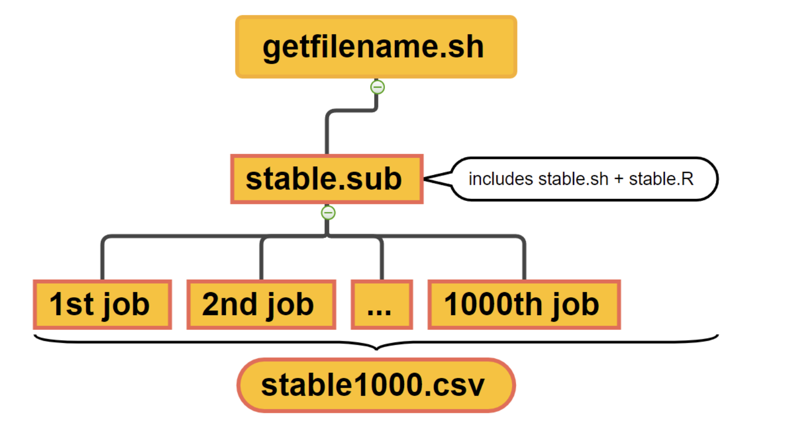
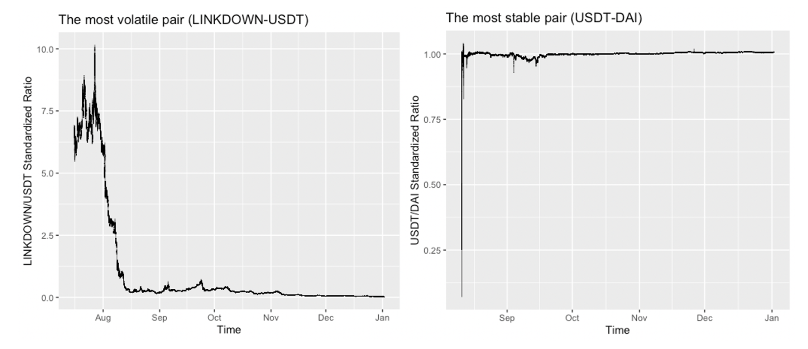
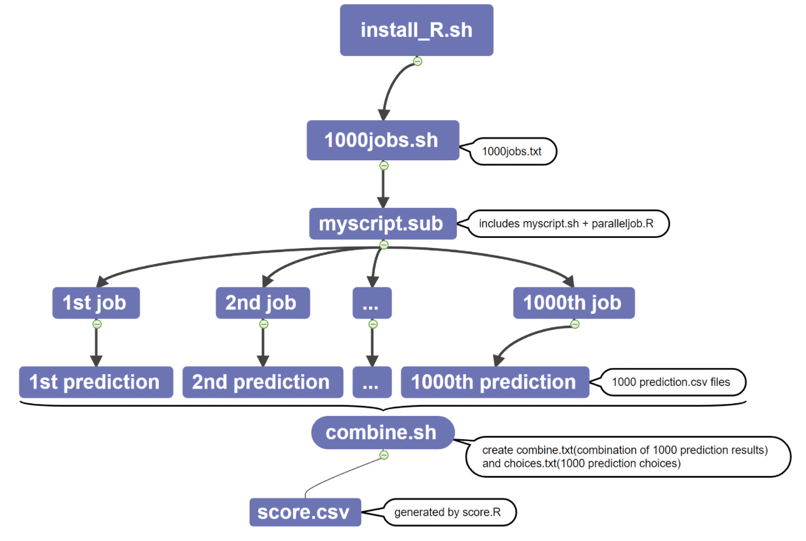
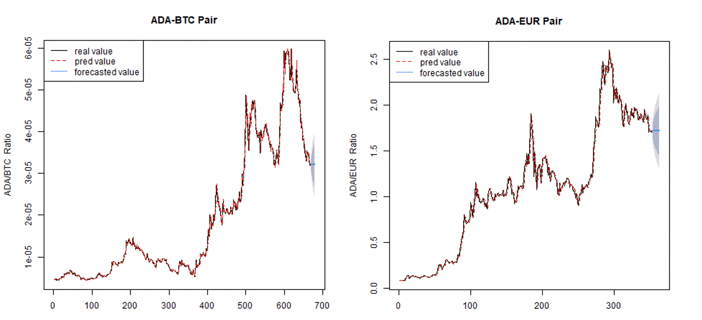

In recent years, with the popularity of Bitcoin, a variety of cryptocurrencies have emerged. Because of the volatility of cryptocurrencies, investors have difficulty in choosing which to invest in. Therefore, our group focused on giving advice to inexperienced investigators, using variance to measure fluctuation and time series models to predict the future trend of cryptocurrency pairs based on large scale computing.
Our data sourced from Kaggle (25GB). It’s a collection of 1 minute candlesticks of 1000 cryptocurrency pairs (eg: 1INCH/BTC, etc.) on Binance.com containing 10 columns. The pairs help illustrate the relative worth of coins. In this project, we mainly use the “open” (1-minute open price ratio) column and the “open_time” (recorded open time) column.
To reduce the computational burden, we ran 2000 parallel jobs on CHTC, where the first half calculated the variance and the second half predicted the future trend. Then we aggregated the results and compared them and got the conclusion: For risk avoiders and takers, USDT-DAI and LINKDOWN-USDT are best choices respectively; As for the prediction part, IDRT is the most potential choice.
CHTC is short for Center for High Throughput Computing. It is a collection of principles and techniques which maximize the effective throughput of computing resources towards a given problem. When applied for scientific computing, HTC can result in improved use of a computing resource, improved automation, and help drive the scientific problem forward.
To configure the enviornment, we need to download the packages used in R.
A .sub file wich could be submitted to CHTC and run interactive jobs and could be used for debugging.
# R build file; run via "condor_submit -i interactive.sub"
universe = vanillalog = interactive.log
# Choose an R version from http://chtc.cs.wisc.edu/r-jobs.shtml#supportedtransfer_input_files = http://proxy.chtc.wisc.edu/SQUID/chtc/R402.tar.gz, install_R.sh
+IsBuildJob = truerequirements = ( IsBuildSlot == true )request_cpus = 1request_memory = 8GBrequest_disk = 2GB
queueA shell script for downloading R packages used for following jobs.
# http://chtc.cs.wisc.edu/r-jobs.shtmltar xzf R402.tar.gzexport PATH=$PWD/R/bin:$PATHexport RHOME=$PWD/Rmkdir packagesexport R_LIBS=$PWD/packagesexport LIBARROW_MINIMAL=falseARROW_WITH_SNAPPY=ON
packages="c('forecast', 'zoo','TSA','arrow')"repository="'http://mirror.las.iastate.edu/CRAN'" # cannot use "https" mirrorRscript -e "install.packages(pkgs=$packages, repos=$repository)"tar czf packages.tar.gz packages
# note linux version (unnecessary)lsb_release -a | tee linuxVersion.txtexit 0
We want to find the most stable and most volatile pair from 1000 cryptocurrency pairs. Stable currencies means a close relationship between 2 types of crypto. Volatile currencies means you will make a lot of profit or loss. We use variance to measure the level of fluctuation, which can help people make decisions for their investment.
We use the currency with “open_time” between 2020-01-01 23:00:00 CST and 2021-01-01 23:00:00 CST. We use open ratio to calculate the variance for each pair.

First, we extract the filenames of the 1000 files(cryprocurrency pairs):
ls data | cut -d'.' -f1 > filename.txtThe following shell file is used for running 1000 parallel jobs according to the name of the files.
# untar your R installationtar -xzf R402.tar.gztar -xzf packages.tar.gz# make sure the script will use your R installation, # and the working directory as its home locationexport PATH=$PWD/R/bin:$PATHexport RHOME=$PWD/Rexport R_LIBS=$PWD/packages# run your scriptRscript stable.R $1The following R script is used for calculating each variance for the 1000 pairs.
rm(list=ls())args = commandArgs(trailingOnly=TRUE)if(length(args) == 1){ process = as.numeric(args[1])} else { cat('usage: Rscript stable.R <file name>\n', file=stderr()) stop()}library(arrow)data <- read_parquet(paste0(args[1],".parquet"), as_tibble = TRUE)data1 <- data[which(data$open_time >= '2020-01-01 23:00:00 CST'),]data1 <- data1[which(data1$open_time <= '2021-01-01 23:00:00 CST'),]data1$stand <- data1$open/mean(data1$open)variance <- var(data1$stand)df <- data.frame("variance" = variance, "file" = args[1])write.csv(df, paste("csv/",args[1],".csv", sep = ""), row.names = FALSE)The .sub file is used for submitting 1000 parallel jobs to the CHTC condor to do the computation.
# Before running this with "condor_submit myscript.sub", the# directories log, error, and output must exist.
universe = vanillalog = log/stable_$(Cluster)_$(Process).logerror = error/stable_$(Cluster)_$(Process).erroutput = output/stable_$(Cluster)_$(Process).out
executable = ./stable.sharguments = $(file)
should_transfer_files = YESwhen_to_transfer_output = ON_EXITtransfer_input_files = http://proxy.chtc.wisc.edu/SQUID/chtc/R402.tar.gz, packages.tar.gz, stabel.R, data/$(file).parquet
request_cpus = 1request_memory = 1GBrequest_disk = 1GB
queue file from filename.txtThe most stable pair is HBAR-USDT and the most volatile pair is BTC-BIDR. After we run 1000 parallel jobs on CHTC, we find the most stable pair is HBAR-USDT and the most volatile pair is BTC-BIDR.

As for application of our findings, we believe risk-averters should prefer investment into the stable pairs, while risk-seekers could choose the pairs with larger fluctuation to achieve potential larger benefit.
We want to predict the future trend of the pairs to make recommendations to the investors. After getting the future ratio, we can make a subtraction and know whether it will increase or not. Furthermore, based on ensembled learning strategy, we could judge which one between the pairs is a better choice.

First, we tested ARIMA models on our time series data. ARIMA ran properly on various data sets. Examples shown below.

Next, we checked whether the data was white noise. Considering choosing the parameter manually through ACF and PACF plots could not be achieved when running parallel jobs, we used AIC criterion to choose the parameters automatically. An example shows as below.
## Series: test_dat ## ARIMA(2,0,1) with non-zero mean ## ## Coefficients:## ar1 ar2 ma1 mean## 1.1299 -0.6864 -0.3507 0.2898## s.e. 0.1054 0.0770 0.1370 0.1143## ## sigma^2 estimated as 0.9806: log likelihood=-139.5## AIC=289 AICc=289.64 BIC=302.03## ## Training set error measures:## ME RMSE MAE MPE MAPE MASE## Training set -0.0005668534 0.9702423 0.7613131 23.83428 202.325 0.7033208## ACF1## Training set 0.001841928Similar to the previous section.
ls ./data | sed 's/.parquet//g' >1000jobs.txtxxxxxxxxxxtar -xzf R402.tar.gztar -xzf packages.tar.gz
export PATH=$PWD/R/bin:$PATHexport RHOME=$PWD/Rexport R_LIBS=$PWD/packages
# run your scriptRscript paralleljob.R $1We run parallel jobs to predict ratios for future 10 days and calculated the difference between the 10th and the first day. If it’s larger than 0, we choose the latter cryptocurrency as our choice and if less than 0, then the former one.
xxxxxxxxxxrm(list=ls())args = (commandArgs(trailingOnly=TRUE))if(length(args) == 1){ process = as.numeric(args[1])} else { cat('usage: Rscript paralleljob.R <filename>\n', file=stderr()) stop()}library(forecast)library(TSA)library(arrow)library(zoo)name<-paste(args[1],'.parquet', sep='')dat<-read_parquet(name, as_tibble = TRUE)dat<-na.omit(dat)x <- dat$opensep <- seq(from=1, to=length(x), by=1440)x <- x[sep]x<-ts(x)
#auto_fit_modelest.white.noise <- function(x){ p_value = c() for (i in 1:2) { tmp <- Box.test(x, type='Ljung-Box', lag=6*i) p_value = append(p_value,tmp[[3]]) } if(min(p_value) <= 0.05) { return(1) } else { return(0) }}est.model <- function(x){ non.white = est.white.noise(x) if(non.white==1) { auto.model <- auto.arima(x,max.p = 5, max.q = 5,ic = 'aic') delta <- auto.model$model$Delta #d phi_length = length(auto.model$model$phi) phi = phi_length #p if(phi_length>0) { for(i in 1:phi_length) { if(abs(auto.model$model$phi[(phi_length-i+1)])>0) #make sure not 0 { break } else { phi=phi-1 } } } theta_length = length(auto.model$model$theta) theta = theta_length #q if(theta>0) { for(i in 1:theta_length) { if(abs(auto.model$model$theta[(theta_length-i+1)])>0) { break } else { theta=theta-1 } } } return(arima(x,order = c(phi,delta,theta))) } else{ return(0) }}x.fit = est.model(x) #if est.model return 0，it means white noise，no need to research.fore <- forecast::forecast(x.fit,h = 10)diff<-fore$mean[10]-fore$mean[1]stri<-strsplit(args[1],'-')if(diff>0) write.csv(diff,paste(stri[[1]][2],'_',args[1],'.csv',sep=''))if(diff<0) write.csv(diff,paste(stri[[1]][1],'_',args[1],'.csv',sep=''))xxxxxxxxxxuniverse = vanillalog = log/final.logerror = error/final.$(Process).erroutput = output/final.$(Process).out
executable = ./myscript.sh
arguments = $(jobs)
should_transfer_files = YESwhen_to_transfer_output = ON_EXITtransfer_input_files = http://proxy.chtc.wisc.edu/SQUID/chtc/R402.tar.gz, myscript.sh, packages.tar.gz, paralleljob.R, data/$(jobs).parquet
request_cpus = 1request_memory = 2GBrequest_disk = 1GB
queue jobs from 1000jobs.txtFinally, we aggregated all the preferred cryptocurrencies and the differences, and calculated a score value based on the following function:
This file is used for combining all the choices and the prediction results.
xxxxxxxxxxls *.csv | sed 's/_.*//g' > choices.txtcat *.csv > combine.txtThis code is used for calculating the score of each cryptocurrency. choice.txt is the final choice we choose between the 2 cryptocurrencies, combine.txt is the prediction difference result , 1000jobs.txt is the 1000 file names.
xxxxxxxxxxlibrary(tidyverse)choice <- read.table('choices.txt',sep = ',')combine <- read.table('combine.txt',sep = ',')jobs <- read.table("1000jobs.txt")names <- data.frame(matrix(nrow=0,ncol=2))for (i in 1:1000){ names[i,] <- strsplit(jobs[i,],'-')[[1]]}
new_name <- c(names[,1],names[,2])%>%as.data.frame()names(new_name) <- 'name'new_name <- new_name%>%group_by(name)%>%summarise(n=n())
combine <- combine[,-1]%>%as.data.frame()combine[combine=='x'] <- NAcombine <- na.omit(combine)dat <- cbind(combine,choice)names(dat) <- c('diff','choice')dat$diff <- dat$diff%>%as.numeric()
a <- dat%>%group_by(choice)%>%summarise(count=n())%>% filter(count!=1)%>% left_join(new_name,by=c('choice'='name'))%>% mutate(score=count/n)%>%arrange(-score)
write.csv(a,'score.csv')IDRT is the best choice according this model. The following table shows the results.
| Cryptocurrency | Score |
|---|---|
| IDRT | 81333 |
| ETH | 36146 |
| BNB | 11846 |
| TRY | 7515 |
| BTC | 3836 |
| DOT | 991 |
For those who are freshman in investigation on cryptocurrencies, risk avoiders and takers can take USDT-DAI and LINKDOWN-USDT as their choices, respectively; Considering the future trend, IDRT is the most potential choice. Future investigations can be focused more on developing time series models on predicting and constructing better evaluations on cryptocurrencies.